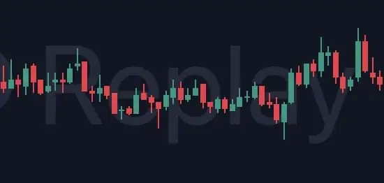
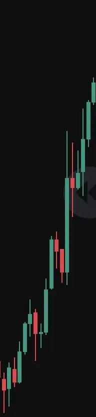
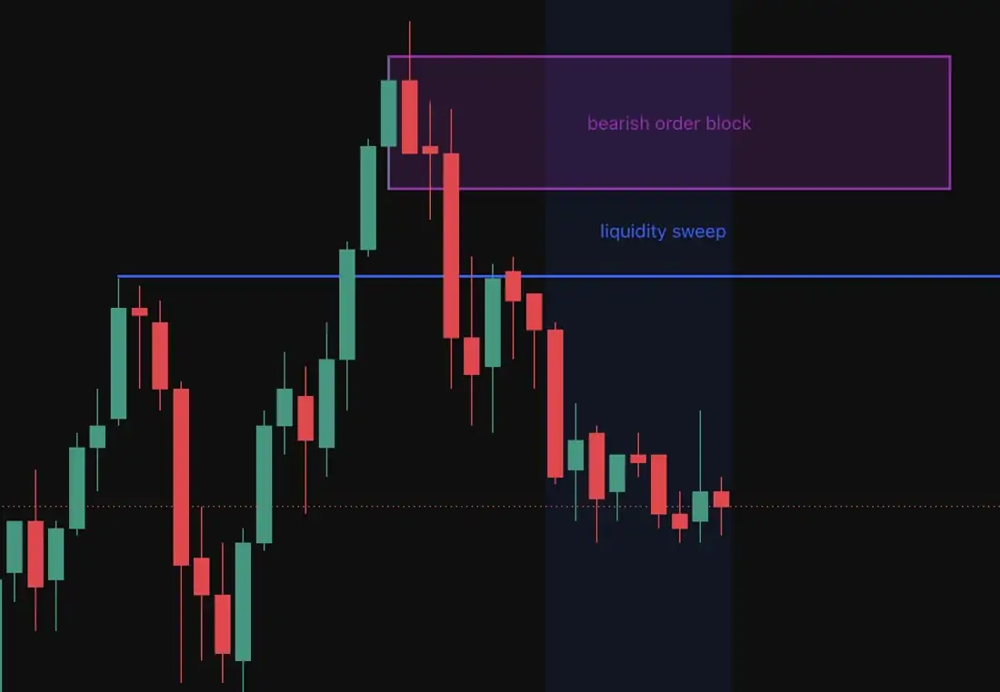

03 / Execute · Putting it together
Sweep, then return
Two steps, three timeframes. The hour chart picks the direction, the five-minute finds the sweep and the order block, the one-minute times the entry.
1H · bias5M · sweep + OB1M · entry
- TimeframeFive-minute chart.
- TriggerPrice crosses a liquidity zone, then rejects in the opposite direction. The rejection should be fast, not slow.
- FilterOnly take sweeps in the direction of the general market trend. Check the one-hour chart, or look at what happened in the New York session.


- MarkDraw the order block with the rectangle tool on the five-minute chart. For a long, it's the last down candle before the sweep; for a short, the last up candle. Wick to wick.
- WaitDrop to the one-minute chart and wait for price to retrace into the block.

- StopBeyond the swept liquidity, with a few ticks of clearance so a wick can't take you out.
- TargetThe next draw on liquidity, or at least 1:2. Check it with the position tool.
- SizeRisk 1–3% of the account. Use the calculator to turn the stop distance into contracts.
Pre-trade checklist
Every box, every time
No trade yet.
0/9